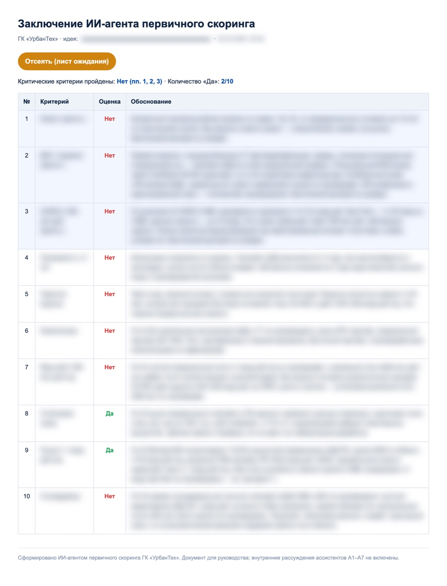

Контекст
В компании бизнес-идеи приходят быстрее, чем команда успевает их обрабатывать.
Что было сделано
1Зафиксировали критерии скоринга бизнес-идей
2Распаковала подход заказчика и переложила его на методологию работы ИИ-агента
3Настроила логику ИИ-агента и собрала его
4Автоматизировали итоговое заключение
5Протестировали на реальных инициативах, чтобы верифицировать верный подход агента

Реальное заключение агента: вердикт и оценка «Да/Нет» по 10 критериям. Название идеи, формулировки критериев и обоснования скрыты — коммерческая тайна
Результат
1 страница со скорингом по критериям и детальный протокол-заключение
Ключевые цифры
20 минвместо 10+ дней
1 страницавместо 20+
1 кнопкадля клиента